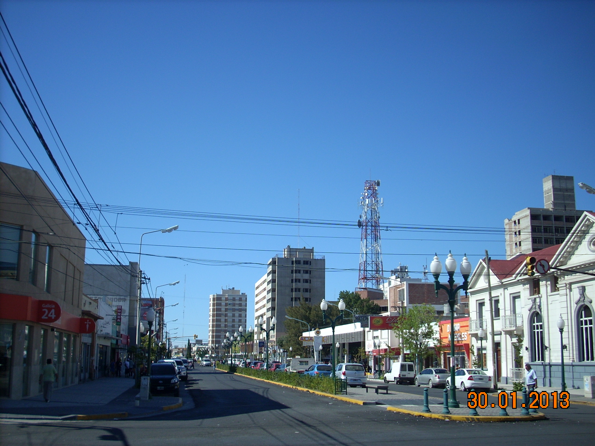
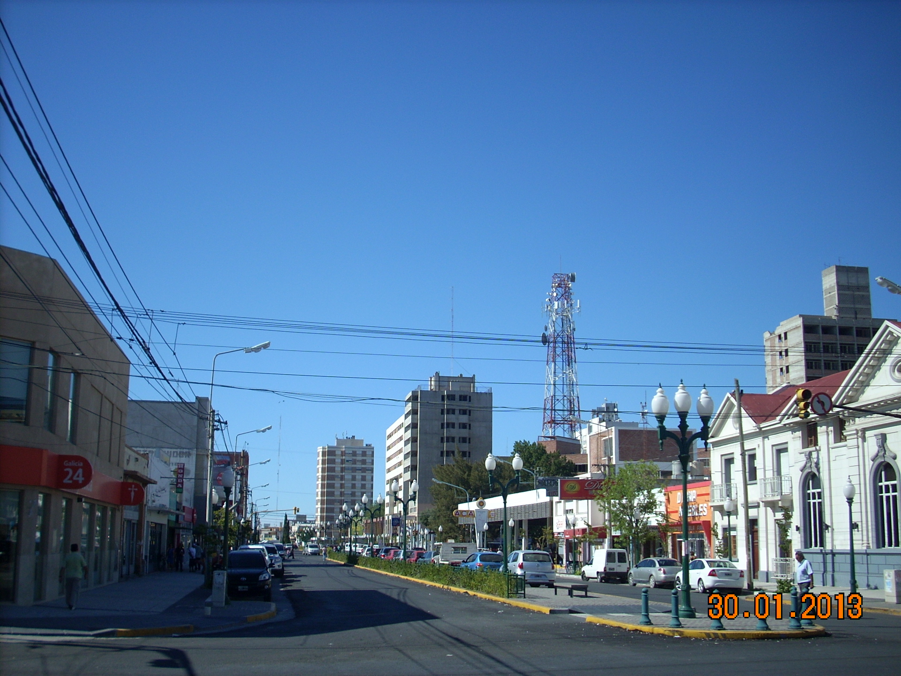

Historia de Trelew
Ciudad histórica Trelew es una ciudad del valle inferior del río Chubut, en el departamento Rawson, en el noreste de la provincia del Chubut en la Patagonia argentina. Se encuentra a 1451 km de Buenos Aires y a 17 km de Rawson, la capital provincial.4 Se comenzó a formar en 1886 cuando se sancionó la Ley n.º 1539 el 20 de octubre de ese año (fecha que se toma como el aniversario de la ciudad), bajo el impulso de la inmigración galesa de fines de siglo XIX que colaboró con el tendido del Ferrocarril Central del Chubut. Además, la ciudad es la más grande y poblada del valle inferior del río Chubut con más de 100 000 habitantes. Es un importante centro comercial e industrial y constituye el polo textil lanero más importante del país. Allí se industrializa y comercializa el 90 % de la lana argentina. La producción sale por Puerto Madryn y Puerto Deseado, principalmente hacia el exterior. En la ciudad se encuentra el Museo Regional Pueblo de Luis, donde se muestran aspectos históricos de la región relacionados con la colonia galesa y los grupos mapuches y tehuelches. El Museo Paleontológico Egidio Feruglio conserva restos del patrimonio paleontológico de la Patagonia y es uno de los más importantes de América del Sur y donde parten paleontólogos hacia el interior provincial para hacer importantes hallazgos. Además, la ciudad cuenta con el Aeropuerto Almirante Marcos A. Zar y la Base Aeronaval Almirante Zar, el Observatorio Astronómico y Planetario, el Salón San David, la Capilla Moriah y el centro comercial Portal Trelew. También, la ciudad es un importante centro industrial de la región. Antes, la ciudad tenía la Torre Omega Trelew, una de las más altas del mundo con casi 400 m de altura. La ciudad de Trelew también sirve como base para actividades turísticas de relevancia nacional e internacional durante todo el año, conectando puntos de gran interés turístico como Península Valdés, Punta Tombo, Gaiman, dique Florentino Ameghino y otros. La ciudad forma un pequeño aglomerado urbano con las zonas rurales de Hendre, Drofa Dulog, Glyn Du, Treorky y Tres Sauces. Actualmente tiene 43 barrios.
Ciudad trelew
 
